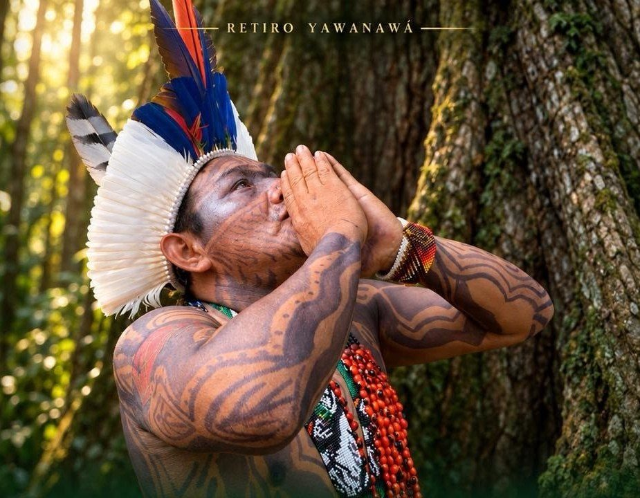

Condução do retiro
Wiyahu Yawanawá
Da aldeia Yawarani, é caçador, pescador e feitor de Uni, Rume e Sananga. Estudioso da cultura e espiritualidade Yawanawá, compartilha os saberes herdados de seus anciões e contribui para o resgate das tradições e da língua nuke tsãe.